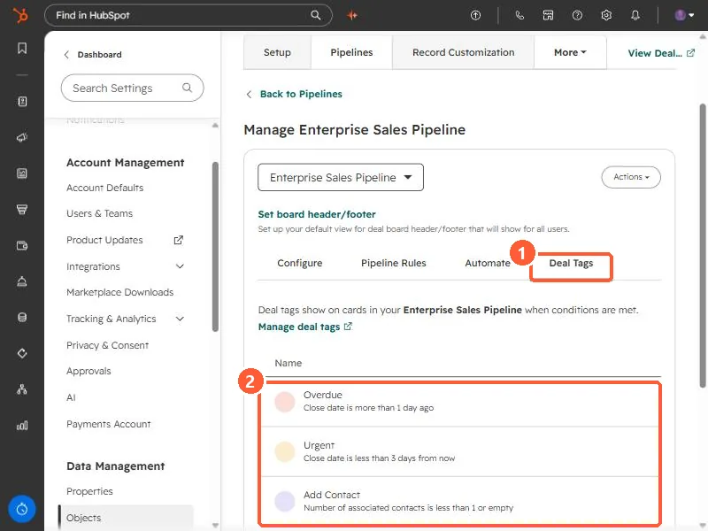

Short answer
Deal tags are color-coded labels that appear on deal cards when conditions are met. Set them under the Deal Tags tab in pipeline settings. My demo pipeline has Overdue (close date more than 1 day ago), Urgent (close date less than 3 days away), Add Contact (no associated contacts), Stale (created more than 90 days ago), and Next Activity Due Soon. HubSpot says Starter tags apply to all pipelines, Professional and Enterprise can scope them to a pipeline, and creating them needs Super Admin.
1. The tags in a pipeline
Open a pipeline from deal pipeline settings and click Deal Tags. The tab says deal tags show on cards in the pipeline when conditions are met.


- Overdue: close date is more than 1 day ago.
- Urgent: close date is less than 3 days from now.
- Add Contact: number of associated contacts is less than 1 or empty.
- Stale: create date is more than 90 days ago.
- Next Activity Due Soon!: next activity date is less than 1 day from now.
These are the tags set up in my demo. HubSpot offers preset tags for deals when you click Create tag, or you can create one from scratch.
2. How a tag is built
- A name, optional description, emoji, and color. Gray is the default.
- All pipelines, or specific pipelines (Professional or Enterprise).
- Filters on the deal, or on an associated object such as the deal's contacts. AND inside a group, OR across groups, the same as segments.
3. Use the tag elsewhere
HubSpot says the tag property can be used in saved views, reports, workflows, and segments, and you can add a Deal Tags column to a table view. A Stale tag plus a saved view is a quick cleanup list. See close stale deals.